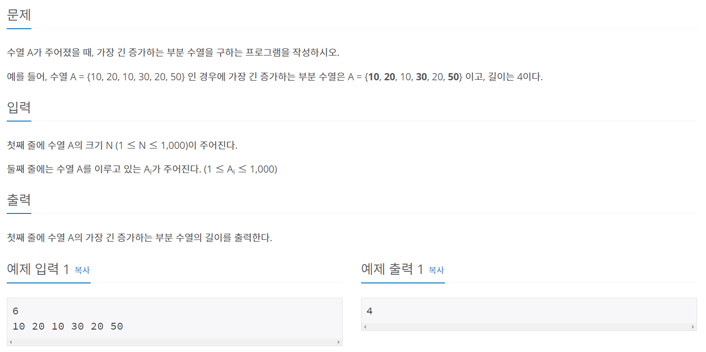
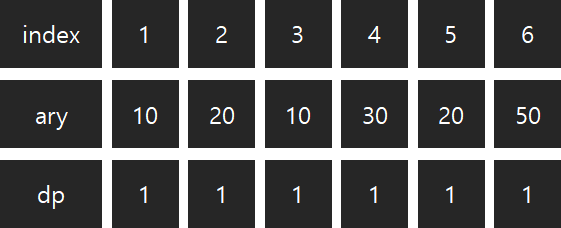
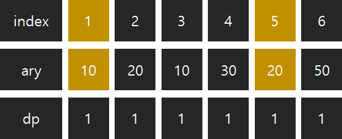
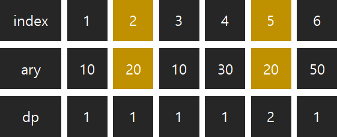
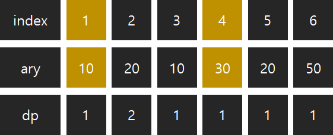
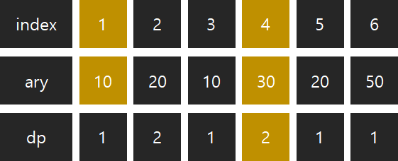
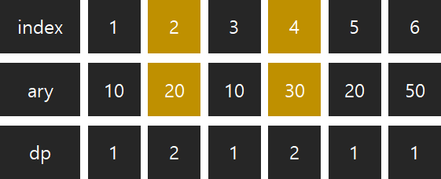
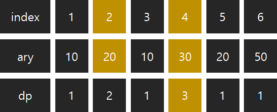
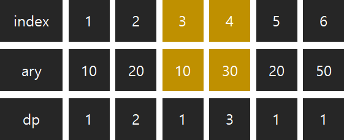
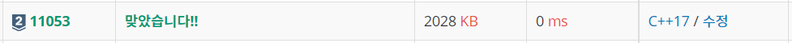

#INFO
난이도 : SILVER2
알고리즘 유형 : DP(다이나믹 프로그래밍)
문제 출처 : https://www.acmicpc.net/problem/11053

#SOLVE
11053 "가장 긴 증가하는 부분 수열" 문제 풀이를 위해 2가지 배열을 선언했다.
1. ary[1001] - 수열의 원소를 저장할 배열이다.
2. dp[1001] - 각 원소로 끝나는 가장 긴 부분 수열을 저장할 배열이다. (예를 들어 dp[2] = 3 은 , 2번째 인덱스의 원소로 끝나는 가장 긴 부분 수열의 길이가 3 이라는 의미이다.)
int ary[1001];
int dp[1001];
다음으로 dp 배열의 모든 원소를 fill_n 메서드를 이용해 1로 초기화 한다. 왜냐하면 각 원소 그 자체로 하나의 부분 수열이기 때문이다.
// Initialize dp array with "1"
fill_n(dp, n+1, 1);
이제 각 원소들의 dp값 (각 원소로 끝나는 가장 긴 부분 수열의 길이) 를 구해 보자.
가장 긴 부분 수열을 만들기 위해서는 다음 2가지 조건을 충족해야 한다.
1. 현재 인덱스의 값이 비교하는 인덱스의 값 보다 커야 한다.
예를 들어 5번째 인덱스의 값 (20) 의 dp값을 구한다고 생각해 보자. 현재 인덱스 값 ( 5번째 인덱스 값 20) 이 비교 인덱스 값 ( 1번째 인덱스 10 ) 보다 크기에 증가 부분 수열의 조건을 만족한다.

이번에는 5번째 인덱스 값 (20) 과 2번째 인덱스 (20) 을 비교해보자. 현재 인덱스 값 ( 5번째 인덱스 값 20 ) 이 비교 인덱스 값 ( 2번째 인덱스 값 20 ) 보다 크지 않기에 , 증가 부분 수열의 조건을 만족하지 못한다.

2. 비교 인덱스 값을 증가 부분 수열에 추가 하는 것이 최적의 선택이 되어야 한다.
말로만 들으면 모호할 수 있으니, 4번째 인덱스의 dp값을 구하는 상황을 예시로 이해해 보도록 하자. (1, 2, 3 번째 인덱스의 dp값은 미리 알맞은 dp값으로 초기화해 두었다고 가정한다)
4번째 인덱스 값 (30) 과 1번째 인덱스 값 (10) 을 비교한다. 4번째 인덱스 값 (30) 이 1번째 인덱스 값 (10) 보다 크기에, 1번조건은 만족한다. 다음으로 2번조건을 살펴보자.
현재 4번째 인덱스의 증가 부분수열은 {30} 이다. 여기에 1번째 인덱스 값 (10) 을 추가하면 {10, 30} 이 된다. 따라서 1번째 인덱스를 증가 부분 수열에 추가하는 것이 최적의 선택이다. 모든 조건을 만족하니, dp (증가 부분 수열의 길이) 를 1 증가 시킨다.
 
4번째 인덱스 값 (30) 과 2번째 인덱스 값 (20) 을 비교한다. 마찬가지로 4번째 인덱스 값 (30) 이 2번째 인덱스 값 (20) 보다 크기에, 1번 조건을 만족한다.
현재 4번째 인덱스의 증가 부분 수열은 {10, 30} 이다. 여기에 2번째 인덱스 값 (20) 을 추가하면, {10, 20, 30} 이 된다. 따라서 2번째 인덱스를 증가 부분 수열에 추가하는 것이 최적의 선택이다.
마찬가지로 모든 조건을 만족하기에, dp값을 1 증가시킨다.
 
마지막으로 4번째 인덱스 값 (30) 과 3번째 인덱스 값 (10) 을 비교해 보자. 우선, 1번째 조건은 만족한다.
다음으로 2번째 조건을 만족하는 지 확인해 보자. 현재 4번째 인덱스의 증가 부분 수열은 {10, 20, 30} 이다. 그런데 여기서 3번째 인덱스 값을 증가 부분 수열에 추가하면 {10, 30} 으로 오히려 증가 부분 수열의 길이가 3에서 2로 줄어든다. 따라서 3번째 인덱스 값을 증가 부분 수열에 추가하는 것은 최적의 선택이 아니다.

설명이 길어졌는데, 코드는 그렇게 어렵지 않다.
for (int i = 1 ; i <= n ; ++i) {
for (int j = 1 ; j <= i ; ++j) {
if (ary[j] < ary[i] && dp[i] < dp[j] + 1)
dp[i] = dp[j] + 1;
}
}
마지막으로 dp 배열에 저장된 원소들 중 가장 큰 값을 출력해 주기만 하면 된다.
cout << *max_element(dp, dp + sizeof(dp)/sizeof(int)) << "\n";#CODE
#include <iostream>
#include <algorithm>
using namespace std;
int ary[1001];
int dp[1001];
int main() {
int n;
cin >> n;
// Initialize dp array with "1"
fill_n(dp, n+1, 1);
for (int i = 1 ; i <= n ; ++i) {
cin >> ary[i];
}
for (int i = 1 ; i <= n ; ++i) {
for (int j = 1 ; j <= i ; ++j) {
if (ary[j] < ary[i] && dp[i] < dp[j] + 1)
dp[i] = dp[j] + 1;
}
}
cout << *max_element(dp, dp + sizeof(dp)/sizeof(int)) << "\n";
return 0;
}